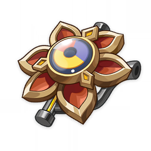
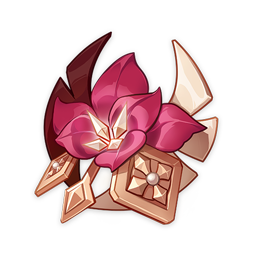

Genshin Impact · Versión 7.2
Análisis del Rol y Escalado
Valeri es un personaje de elemento Electro originario de Snezhnaya que utiliza Espada Ligera y se posiciona en el tier T0.5 (S) Support dentro del rol de Escudero y Buffer Electro de Conducto Estelar (Escala 100% con ATQ). Su rendimiento en combate gira en torno a este eje principal: Escudo y buffs exclusivos Electro escalan 100% con ATQ total.
Para maximizar su aporte en el equipo, la configuración prioritaria combina Rompemontañas con el conjunto de artefactos A Day Carved from Rising Winds (4 piezas), respetando la jerarquía de estadísticas ATQ% > ATQ plano > Recarga de Energía (160–180% solo si usas Q cada rotación). y subiendo sus habilidades en orden: Ataques Normales (Cargado Especial) > Habilidad Elemental (E - Escudo) > Definitiva (Q).
Mejores Armas
Opciones recomendadas ordenadas por rendimiento según el meta actual y compatibilidad con sus rotaciones:
-
 Rompemontañas ★★★★★BiS Firma / Escudo608 ATQ base, 49.6% ATQ% y +20% Fuerza de Escudo; el escudo duplica sus acumulaciones de ATQ%.
Rompemontañas ★★★★★BiS Firma / Escudo608 ATQ base, 49.6% ATQ% y +20% Fuerza de Escudo; el escudo duplica sus acumulaciones de ATQ%. -
 Aquila Favonia ★★★★★Alternativa 5★674 ATQ base (máximo ATQ base en espadas) y +20% ATQ pasivo para maximizar sus buffs.
Aquila Favonia ★★★★★Alternativa 5★674 ATQ base (máximo ATQ base en espadas) y +20% ATQ pasivo para maximizar sus buffs. -
 Hoja Afilada Celestial ★★★★★Alternativa 5★ ER608 ATQ base y 55.1% Recarga de Energía si priorizas lanzar Definitiva cada rotación.
Hoja Afilada Celestial ★★★★★Alternativa 5★ ER608 ATQ base y 55.1% Recarga de Energía si priorizas lanzar Definitiva cada rotación. -
 Calamidad de Eshu ★★★★Opción 4★ Evento565 ATQ base y 27.6% ATQ%; refuerza sus Ataques Cargados bajo escudo.
Calamidad de Eshu ★★★★Opción 4★ Evento565 ATQ base y 27.6% ATQ%; refuerza sus Ataques Cargados bajo escudo. -
 Réquiem Abisal ★★★★Mejor F2P Forja565 ATQ base y 27.6% ATQ% (+12% ATQ tras E y bono plano al limpiar Pacto Vital).
Réquiem Abisal ★★★★Mejor F2P Forja565 ATQ base y 27.6% ATQ% (+12% ATQ tras E y bono plano al limpiar Pacto Vital).
Mejores Sets de Artefactos
Combinaciones de 4 piezas o mezclas de 2 piezas para maximizar su contribución:
-
 A Day Carved from Rising Winds (4 piezas) BiS Soporte
A Day Carved from Rising Winds (4 piezas) BiS Soporte+18% ATQ (2p) y +25% ATQ adicional tras golpear (4p), activable fuera de campo.
-

Heart of the Furnace (4 piezas) Alternativa Estelar+18% ATQ (2p); aumenta +50% el Daño de reacciones Estelares de todo el equipo.
-

Gladiator's Finale (2 piezas) + Shimenawa's Reminiscence (2 piezas) Alternativa 2p+2p+36% ATQ total directo si buscas piezas con mejores subestadísticas de ATQ%.
Estadísticas Principales y Secundarias
Atributos prioritarios en artefactos para un balance óptimo de daño o soporte:
| Pieza | Estadística Principal |
|---|---|
| Reloj (Arenas) | ATQ% |
| Cáliz | ATQ% |
| Corona | ATQ% |
Prioridad de Subestadísticas
- ATQ% > ATQ plano > Recarga de Energía (160–180% solo si usas Q cada rotación).
Prioridad de Talentos
Ataques Normales (Cargado Especial) > Habilidad Elemental (E - Escudo) > Definitiva (Q)
Objetivos de Estadísticas (Nivel 90)
Valores de referencia verificados para evaluar el equipamiento de Valeri en nivel 90 con artefactos de 5 estrellas:
| Atributo | Meta Recomendada |
|---|---|
| Vida | 15,000+ |
| Ataque | 2,800+ ATQ |
| Defensa | 700+ |
| Maestría Elemental | 0 |
| Recarga de Energía | 160% – 180% (opcional) |
| Balance Crítico | No prioritario |
Talentos de Combate y Materiales (Nivel 1 al 10)
Habilidades principales de Valeri y desglose exacto de libros, materiales y Mora para mejorar sus talentos:


Composiciones de Equipo Recomendadas
Alineaciones con mayor sinergia elemental y amplificación de daño en el Abismo y Teatro Fantasía:
Conducto Estelar con Mitya
Mitya • Yae Miko • Odette • Valeri
Sinergia directa 7.2: protege a Mitya mientras carga ataques y potencia su daño Electro.
Conducto Estelar con Cyno
Cyno • Viajero Cryo • Valeri • Qiqi
Alternativa centrada en Cyno con resonancia y escudo constante.
Materiales de Ascensión (Nivel 1 al 90)
Recursos totales requeridos para desbloquear las 6 fases de ascensión de Valeri. Coste total de Mora en ascensiones: 420.000 Mora.


Sinergias y Guías Relacionadas
Explora las fichas de armas, artefactos y materiales de los principales compañeros de equipo para Valeri: